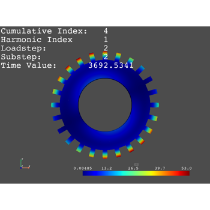
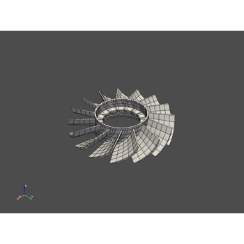

Examples#
Here are a series of examples that demonstrate the behavior and usage
of ansys-mapdl-reader.
Loading and Visualizing Result Files#
Custom Scalar Visualization


Cyclic Result Analysis#
The following examples demonstrate how to load results from and directly analyze MAPDL result files from a cyclic analysis.

Understanding Nodal Diameters from a Cyclic Model Analysis
Understanding Nodal Diameters from a Cyclic Model Analysis


Cyclic Model Visualization